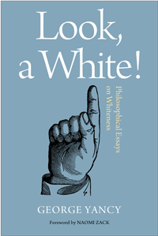

<body bgcolor="#FFFFFF" text="#000000" link="#0000FF" vlink="#CC0000" alink="#CC0000"><center><hr width="350" size="1" align="center" noshade>From a celebrated scholar on race, a book on ways of seeing, and seeing through, whiteness<hr width="350" size="1" align="center" noshade><p><a href="https://cdcshoppingcart.uchicago.edu/Cart/ChicagoBook.aspx?ISBN=9781439908532&&PRESS=temple" target="_top">Buy this book!</a> | <a href="https://cdcshoppingcart.uchicago.edu/Cart/Cart.aspx?PRESS=temple" target="_top">View Cart</a> | <a href="https://cdcshoppingcart.uchicago.edu/Cart/Cart.aspx?PRESS=temple" target="_top">Check Out</a></p><p></p></center><!--none//--><h1>Look, a White!</h1>
<H2>Philosophical Essays on Whiteness</H2>
<h3>George Yancy, foreword by Naomi Zack</h3>
<P>cloth 1-4399-0853-2 $85.50, May 12, <FONT COLOR=#990033>Available</FONT>
<br>paper 1-4399-0854-0 $28.95, May 12, <FONT COLOR=#990033>Available</FONT>
<br>Electronic Book 1-4399-0855-9 $28.95 <FONT COLOR=#990033>Available</FONT>
<BR> 224 pp
6x9
</P><BLOCKQUOTE><I>"You read these dangerous, often breathtaking essays at your own risk. A fearless analysis that makes visible how white, racial consciousness is constructed daily and then perpetuated by narcissism and naivety, </I>Look, a White!<I> does more than deepen and refine our centuries-old discourse on racial being. It delivers, as the best philosophy must, a clarification of what it means to be human in the casements of our differently colored skins."</I><br>&#151<b>Charles Johnson</b>, University of Washington</I></BLOCKQUOTE>
<P><i>Look, a White!</i> returns the problem of whiteness to white people. Prompted by Eric Holder's charge, that as Americans, we are cowards when it comes to discussing the issue of race, noted philosopher George Yancy's essays map out a structure of whiteness.
<P>He considers whiteness within the context of racial embodiment, film, pedagogy, colonialism, its "danger," and its position within the work of specific writers. Identifying the embedded and opaque ways white power and privilege operate, Yancy argues that the Black countergaze can function as a "gift" to whites in terms of seeing their own whiteness more effectively.
<P>Throughout <i>Look, a White!</i> Yancy pays special attention to the impact of whiteness on individuals, as well as on how the structures of whiteness limit the capacity of social actors to completely untangle the way whiteness operates, thus preventing the erasure of racism in social life.
<BR>&nbsp;<h2>Excerpt</h2><P>Excerpt available at <a href="http://www.temple.edu/tempress">www.temple.edu/tempress</a></p>
<BR>&nbsp;<h2>Reviews</h2>
<p><i>"Many scholars explore the destructive tendencies of white supremacy, but few do so with the verbal alacrity, philosophical depth, and stylistic grace of George Yancy. In </i>Look, a White!<i> Yancy makes it clear: whiteness must be problematized and exposed for what it is�an intellectual and cultural straitjacket capable of strangling the life out of peoples of color and whites alike by way of its dehumanizing norms. Yancy not only names the sickness; he forces the infected to name it too. He has given white folks� problem back to us. I, for one, am grateful."</i> <br>&#151<b>Tim Wise</b>, author of <I>White like Me: Reflections on Race from a Privileged Son and Dear White America: Letter to a New Minority</i>
<p><i>"</i>Look, a White!<i> is an insightful addition to the growing shelf of works interrogating whiteness and its ways. George Yancy provides useful tools for those seeking to do away with the effects."</i><br>&#151<b>Noel Ignatiev</b>, Massachusetts College of Art
<p><i>"Yancy shares his experience as a black male philosophy professor teaching topics on race to white students. He very effectively uses a quasi-autobiographical narrative to situate various issues regarding race within the classroom, which he takes to be a model of racial discourse that mirrors American society.... Summing Up: Recommended."</i> <br>&#151<b><i>Choice</i></b>
<p><i>"Its rich offering of examples of white privilege from university settings would make it particularly attractive to college students, as well as faculty....Yancy turns the tables on white people, making them the object rather than the subject of a racializing gaze.... The result...is compelling...[and] a beneficial addition to the growing field of critical philosophy of race."</i><br>&#151<b><i>Radical Philosophy</i></b>
<p><i>"This book is a much needed, insightful look at the ideological construct of race.... Yancy opens his book with a brilliant analysis... </i>Look, a White!<i> is a timely book."</i><br>&#151<b><i>Monthly Review</i></b>
<p><i>"Yancy�s </i>'Look, a White!'<i> is a courageous book of radical philosophy. In it he fearlessly gives the reader more than philosophically complex arguments to consider, and offers a gift to whomsoever might continue on through the existentially deep narrative he develops throughout the text.... [An] important work."</i> <br>&#151<b><i>Radical Philosophy Review</i></b>
<p><i>"[T]his is a book of inversions.... Yancy's implicit goal is to bring the activities and the processes of racialization to a halt.... Yancy wields it not to teach per se but to set up a situation, a conceptual environment in which people can learn via their own trajectory. The point is to bring them to the act of looking, to see themselves and their whiteness as anything but natural."</i> <br>&#151<b><i>Socialism and Democracy</b></i>
<p><i>"Yancy contributes to the well established black intellectual tradition...that problematizes and disrupts whiteness from the perspective of embodied suffering of black people in the United States.... </i>Look, a White!<i> should be read for the profound contributions the book provides toward furthering the project of anti-racism in an anti-black world."</i> <br>&#151<b><i>Graduate Faculty Philosophy Journal</b></i>
<p><i>"Yancy�s book unfolds using lived experiences, personal accounts, and examples from literature and cinema showing whiteness in contexts where whiteness functioned as the norm... Yancy calls the reader, calls whites, to </i>tarry<i> with the reality of racism. This means not reaching too quickly for hope, not moving immediately to rationalizations, and not hurrying on to action. All of these responses have a place, but if invoked as a reaction they tend to entrench world views as opposed to allow for transformation. Tarrying allows whites to see their indelible connection to structural racism and become more sensitive to how white subjectivity is formed."</i><br>&#151<b><i>Geez</b></i>
<BR>&nbsp;<h2>Contents</h2><P>
<p>Foreword: <i>Racist Onions and Etchings</i> &bull; <i>Naomi Zack</i>
<br>Acknowledgments
<br>Introduction:<i> Flipping the Script</i>
<br>1. Looking at Whiteness: <i>Finding Myself Much like a Mugger at a Boardwalk�s End</i>
<br>2. Looking at Whiteness: <i>Subverting White Academic Spaces through the Pedagogical Perspective of bell hooks</i>
<br>3. Looking at Whiteness: <i>The Colonial Semiotics in Kamau Brathwaite�s Reading of</i> The Tempest
<br>4. Looking at Whiteness: <i>Whiting Up and Blacking Out in</i> White Chicks
<br>5. Looking at Whiteness: <i>Loving Wisdom and Playing with Danger</i>
<br>6. Looking at Whiteness: <i>Tarrying with the Embedded and Opaque White Racist Self</i>
<br>Notes
<br>Index
</P><BR>&nbsp;<H2>About the Author(s)</H2>
<P><b>George Yancy</b> is Professor of Philosophy at Duquesne University and Coordinator of the Critical Race Theory Speaker Series. He is the author of <i>Black Bodies, White Gazes: The Continuing Significance of Race</i>, which received an Honorable Mention from the Gustavus Myers Center for the Study of Bigotry and Human Rights. He has also edited twelve influential books, three of which have received Choice Awards. He was also recently nominated for the Duquesne University Presidential Award for Excellence in Scholarship</P>
<BR><H2>Subject Categories</H2>
<p><A HREF="/tempress/race.html" TARGET="_top">Race and Ethnicity</a>
<BR><A HREF="/tempress/philosophy.html" TARGET="_top">Philosophy and Ethics</a>
<BR><A HREF="/tempress/sociology.html" TARGET="_top">Sociology</a>
</p>
<p align="center"><a href="https://cdcshoppingcart.uchicago.edu/Cart/ChicagoBook.aspx?ISBN=9781439908532&&PRESS=temple" target="_top">Buy this book!</a> | <a href="https://cdcshoppingcart.uchicago.edu/Cart/Cart.aspx?PRESS=temple" target="_top">View Cart</a> | <a href="https://cdcshoppingcart.uchicago.edu/Cart/Cart.aspx?PRESS=temple" target="_top">Check Out</a></p><p><font face="Arial" size="1"><a href="copyright.html" onMouseOver="window.status='Web Copyright Policy';return true;" onMouseOut="window.status=''" title="Web Copyright Policy">&copy;</a> 2016 <a href="http://www.temple.edu" target="new" onMouseOver="window.status='Link to Temple University home page';return true;" onMouseOut="window.status=''" title="Link to Temple University home page">Temple University</a>. All Rights Reserved. http://www.temple.edu/tempress/titles/2203_reg.html</font></p>